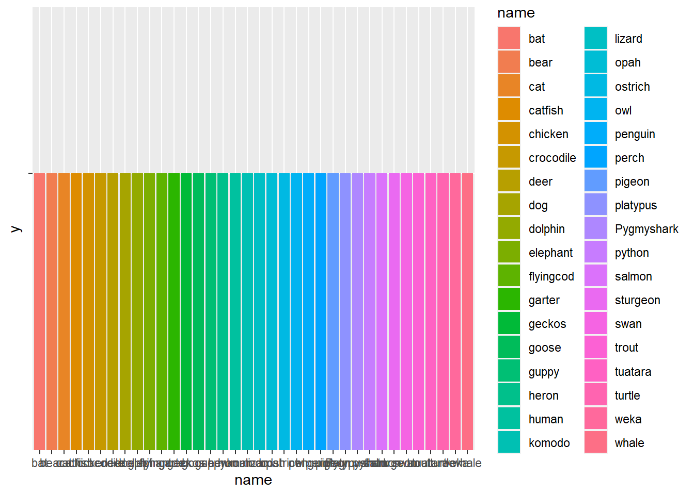
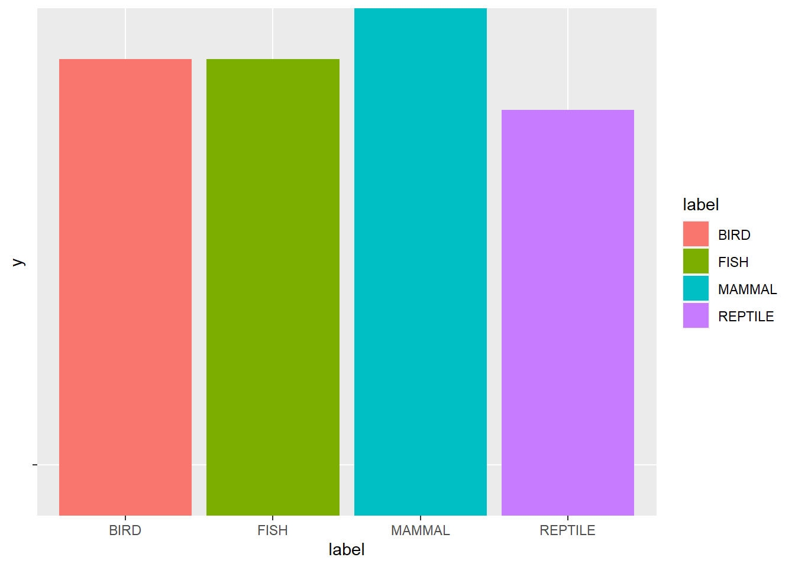
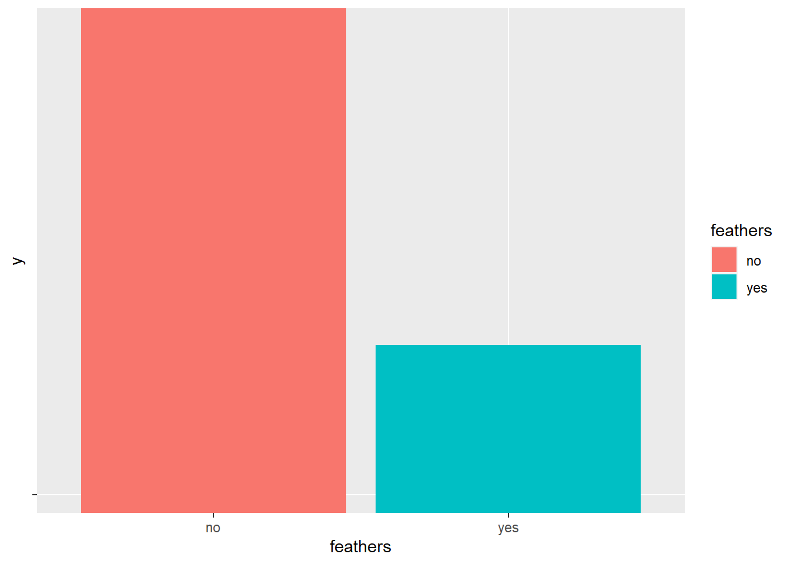
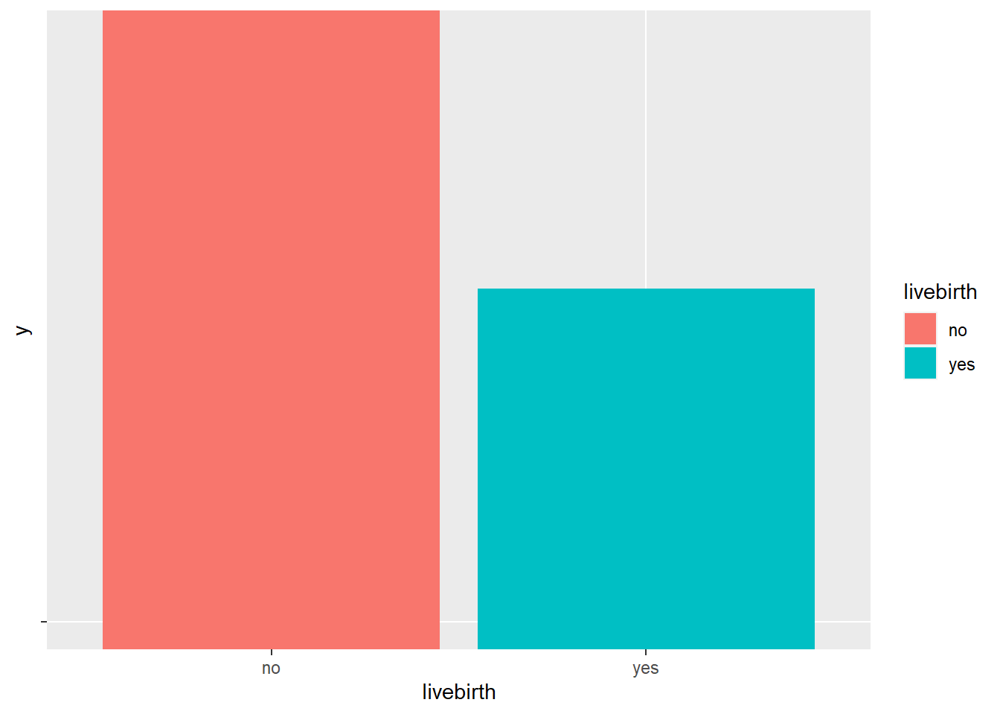
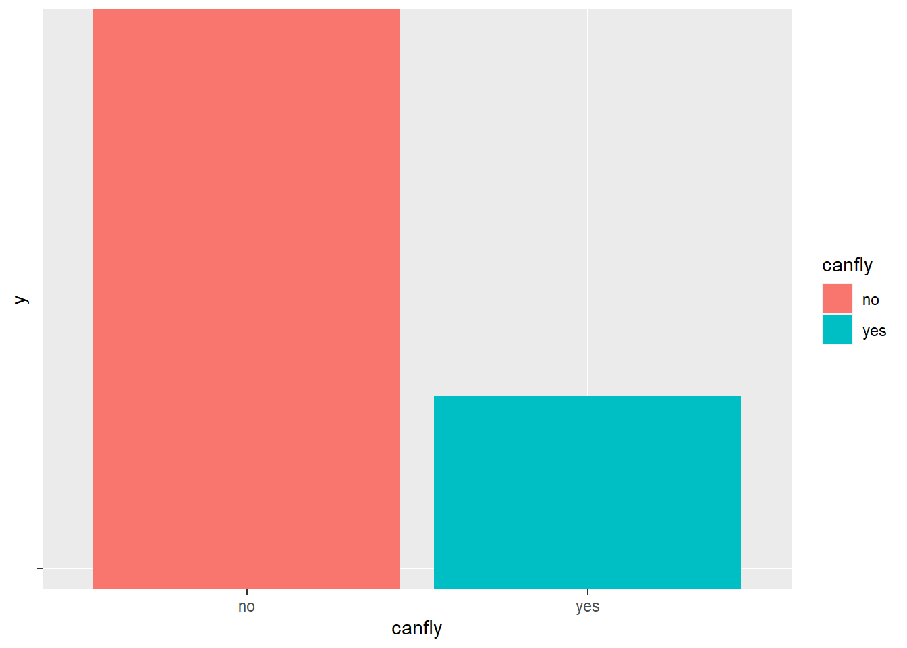
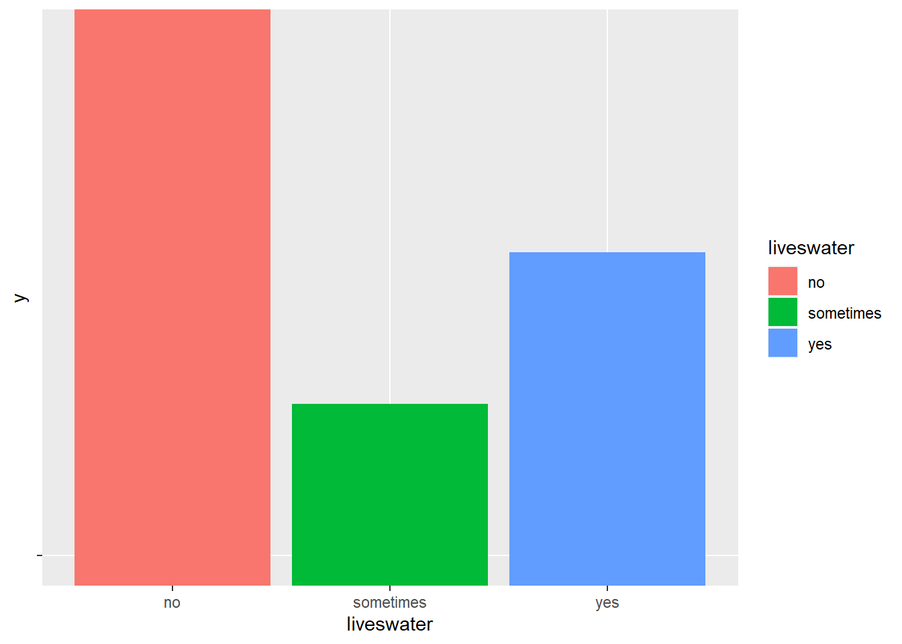
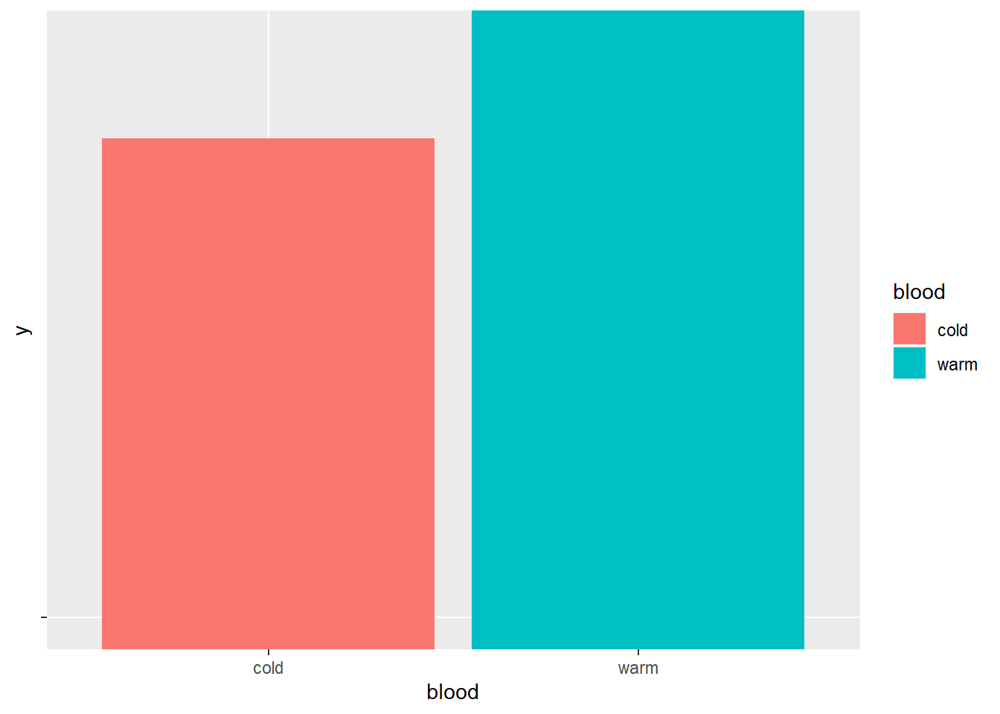
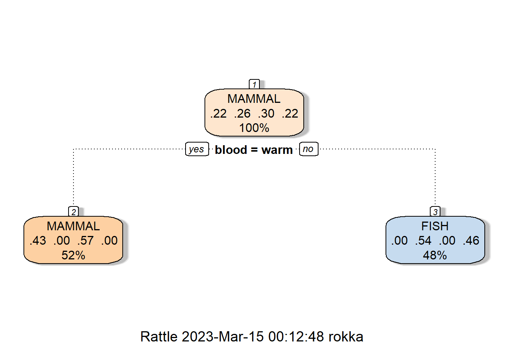
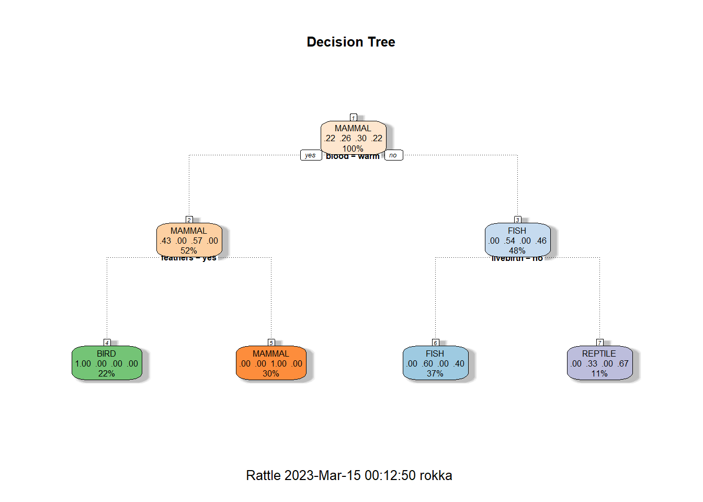

library(rpart) ## FOR Decision Trees
library(rattle) ## FOR Decision Tree Vis
library(rpart.plot)
library(RColorBrewer)
library(Cairo)
library(network)
library(ggplot2)
##If you install from the source....
#Sys.setenv(NOAWT=TRUE)
## ONCE: install.packages("wordcloud")
library(wordcloud)
## ONCE: install.packages("tm")
library(slam)
library(quanteda)
## ONCE: install.packages("quanteda")
## Note - this includes SnowballC
#library(SnowballC)
library(proxy)
## ONCE: if needed: install.packages("stringr")
library(stringr)
## ONCE: install.packages("textmineR")
library(textmineR)
library(igraph)
library(caret)
#library(lsa)Decison Trees - Example1 (R)
Decision Tree Tutorial - Gates
Dataset
https://drive.google.com/file/d/1wxcPBcYHUFh7gPSC0ApPSnQZ6VRUe-C3/view?usp=sharing
LIBRARIES
Read in the dataset you want to work with
setwd(dirname(rstudioapi::getActiveDocumentContext()$path))
# JK note: in this case I set the wd to the current file source locationRecordDatasetName="../../data_files/Labeled_ThreeClasses_Mammals_Fish_Reptiles3.csv"
RecordDF_A<-read.csv(RecordDatasetName, stringsAsFactors=TRUE)
head(RecordDF_A) name label feathers limbs livebirth canfly liveswater blood
1 chicken BIRD yes 2 no yes no warm
2 salmon FISH no 0 no no yes cold
3 whale MAMMAL no 4 yes no yes warm
4 bat MAMMAL no 4 yes yes no warm
5 goose BIRD yes 2 no yes no warm
6 pigeon BIRD yes 2 no yes no warmLet’s start with the record dataset
We need to split it into a TRAINING and a TESTING set
AND
we will remove the label and save it.
Finally, we will remove and save the Name of the animal.
While we do this - let’s check data types
str(RecordDF_A)'data.frame': 36 obs. of 8 variables:
$ name : Factor w/ 36 levels "bat","bear","cat",..: 5 29 36 1 14 25 15 3 23 17 ...
$ label : Factor w/ 4 levels "BIRD","FISH",..: 1 2 3 3 1 1 2 3 1 3 ...
$ feathers : Factor w/ 2 levels "no","yes": 2 1 1 1 2 2 1 1 2 1 ...
$ limbs : int 2 0 4 4 2 2 0 4 2 4 ...
$ livebirth : Factor w/ 2 levels "no","yes": 1 1 2 2 1 1 2 2 1 2 ...
$ canfly : Factor w/ 2 levels "no","yes": 2 1 1 2 2 2 1 1 1 1 ...
$ liveswater: Factor w/ 3 levels "no","sometimes",..: 1 3 3 1 1 1 3 1 2 1 ...
$ blood : Factor w/ 2 levels "cold","warm": 2 1 2 2 2 2 1 2 2 2 ...#RecordDF_A$label<-as.factor(RecordDF_A$label)We MUST convert the label (called label) into type FACTOR!
If you do not do this, your modeling will not work as well (or at all). I did this above using stringsAsFactors=TRUE
Our data is already clean and it is MIXED data. I will not normalize it.
What is mixed data? It is data made up of many data types
However, let’s explore just a little bit to look for BALANCE in the variables AND in the label
!!!!!! We will also need to remove the “name” column
Why??
Simple tables
apply(RecordDF_A, 2, table) # 2 means columns$name
bat bear cat catfish chicken crocodile deer
1 1 1 1 1 1 1
dog dolphin elephant flyingcod garter geckos goose
1 1 1 1 1 1 1
guppy heron human komodo lizard opah ostrich
1 1 1 1 1 1 1
owl penguin perch pigeon platypus Pygmyshark python
1 1 1 1 1 1 1
salmon sturgeon swan trout tuatara turtle weka
1 1 1 1 1 1 1
whale
1
$label
BIRD FISH MAMMAL REPTILE
9 9 10 8
$feathers
no yes
27 9
$limbs
0 2 4
11 9 16
$livebirth
no yes
23 13
$canfly
no yes
27 9
$liveswater
no sometimes yes
19 6 11
$blood
cold warm
16 20 NOTE: Our data and label are balanced pretty well.
Think about what you see. Are there columns to remove from the data?
Here is a fancy method to use a function to create a bar graph for each variable.
## Define the function on any dataframe input x
GoPlot <- function(x) {
G <-ggplot(data=RecordDF_A, aes(.data[[x]], y="") ) +
geom_bar(stat="identity", aes(fill =.data[[x]]))
return(G)
}
## Use the function in lappy
lapply(names(RecordDF_A), function(x) GoPlot(x))[[1]]
[[2]]
[[3]]
[[4]]
[[5]]
[[6]]
[[7]]
[[8]]
Remove unwanted columns
Next - let’s look at the DF and remove columns we do not want to use in our model
We MUST remove the name column or the model will not be good. Think about why.
## RecordDF_A
(AnimalName <- RecordDF_A$name) [1] chicken salmon whale bat goose pigeon
[7] guppy cat penguin human platypus owl
[13] flyingcod catfish dolphin Pygmyshark komodo python
[19] garter turtle bear dog elephant deer
[25] sturgeon trout perch opah weka ostrich
[31] heron swan geckos tuatara lizard crocodile
36 Levels: bat bear cat catfish chicken crocodile deer dog dolphin ... whale(RecordDF_A<-RecordDF_A[-c(1)]) label feathers limbs livebirth canfly liveswater blood
1 BIRD yes 2 no yes no warm
2 FISH no 0 no no yes cold
3 MAMMAL no 4 yes no yes warm
4 MAMMAL no 4 yes yes no warm
5 BIRD yes 2 no yes no warm
6 BIRD yes 2 no yes no warm
7 FISH no 0 yes no yes cold
8 MAMMAL no 4 yes no no warm
9 BIRD yes 2 no no sometimes warm
10 MAMMAL no 4 yes no no warm
11 MAMMAL no 4 yes no no warm
12 BIRD yes 2 no yes no warm
13 FISH no 0 no yes yes cold
14 FISH no 0 no no yes cold
15 MAMMAL no 4 yes no yes warm
16 FISH no 0 no no yes cold
17 REPTILE no 4 no no no cold
18 REPTILE no 0 no no sometimes cold
19 REPTILE no 0 yes no sometimes cold
20 REPTILE no 4 no no sometimes cold
21 MAMMAL no 4 yes no no warm
22 MAMMAL no 4 yes no no warm
23 MAMMAL no 4 yes no no warm
24 MAMMAL no 4 yes no no warm
25 FISH no 0 no no yes cold
26 FISH no 0 no no yes cold
27 FISH no 0 no no yes warm
28 FISH no 0 no no yes cold
29 BIRD yes 2 no yes no warm
30 BIRD yes 2 no no no warm
31 BIRD yes 2 no yes no warm
32 BIRD yes 2 no yes sometimes warm
33 REPTILE no 4 no no no cold
34 REPTILE no 4 no no no cold
35 REPTILE no 4 yes no no cold
36 REPTILE no 4 no no sometimes coldTraining and Testing Data
Next - split into TRAIN and TEST data
!!!! Sampling Matters !!!
In our case, we will use random sampling without replacement.
Why without replacement?
!!!! IMPORTANT - always clean, prepare, etc. BEFORE splitting data into train and test. NEVER after.
(DataSize=nrow(RecordDF_A)) ## how many rows?[1] 36(TrainingSet_Size<-floor(DataSize*(3/4))) ## Size for training set[1] 27(TestSet_Size <- DataSize - TrainingSet_Size) ## Size for testing set[1] 9Random sample WITHOUT replacement (why?)
## set a seed if you want it to be the same each time you
## run the code. The number (like 1234) does not matter
set.seed(1234)
## This is the sample of row numbers
(MyTrainSample <- sample(nrow(RecordDF_A),
TrainingSet_Size,replace=FALSE)) [1] 28 16 22 9 5 6 35 4 2 7 34 31 15 14 20 23 29 26 8 3 19 24 13 10 32
[26] 36 18Use the sample of row numbers to grab those rows only from the dataframe….
(MyTrainingSET <- RecordDF_A[MyTrainSample,]) label feathers limbs livebirth canfly liveswater blood
28 FISH no 0 no no yes cold
16 FISH no 0 no no yes cold
22 MAMMAL no 4 yes no no warm
9 BIRD yes 2 no no sometimes warm
5 BIRD yes 2 no yes no warm
6 BIRD yes 2 no yes no warm
35 REPTILE no 4 yes no no cold
4 MAMMAL no 4 yes yes no warm
2 FISH no 0 no no yes cold
7 FISH no 0 yes no yes cold
34 REPTILE no 4 no no no cold
31 BIRD yes 2 no yes no warm
15 MAMMAL no 4 yes no yes warm
14 FISH no 0 no no yes cold
20 REPTILE no 4 no no sometimes cold
23 MAMMAL no 4 yes no no warm
29 BIRD yes 2 no yes no warm
26 FISH no 0 no no yes cold
8 MAMMAL no 4 yes no no warm
3 MAMMAL no 4 yes no yes warm
19 REPTILE no 0 yes no sometimes cold
24 MAMMAL no 4 yes no no warm
13 FISH no 0 no yes yes cold
10 MAMMAL no 4 yes no no warm
32 BIRD yes 2 no yes sometimes warm
36 REPTILE no 4 no no sometimes cold
18 REPTILE no 0 no no sometimes coldtable(MyTrainingSET$label)
BIRD FISH MAMMAL REPTILE
6 7 8 6 Use the NOT those row numbers (called -) to get the other row numbers not in the training to use to create the test set.
Training and Testing datasets MUST be disjoint. Why?
(MyTestSET <- RecordDF_A[-MyTrainSample,]) label feathers limbs livebirth canfly liveswater blood
1 BIRD yes 2 no yes no warm
11 MAMMAL no 4 yes no no warm
12 BIRD yes 2 no yes no warm
17 REPTILE no 4 no no no cold
21 MAMMAL no 4 yes no no warm
25 FISH no 0 no no yes cold
27 FISH no 0 no no yes warm
30 BIRD yes 2 no no no warm
33 REPTILE no 4 no no no coldtable(MyTestSET$label)
BIRD FISH MAMMAL REPTILE
3 2 2 2 Make sure your Training and Testing datasets are BALANCED
NEXT -REMOVE THE LABELS from the test set!!! - and keep them
(TestKnownLabels <- MyTestSET$label)[1] BIRD MAMMAL BIRD REPTILE MAMMAL FISH FISH BIRD REPTILE
Levels: BIRD FISH MAMMAL REPTILE(MyTestSET <- MyTestSET[ , -which(names(MyTestSET) %in% c("label"))]) feathers limbs livebirth canfly liveswater blood
1 yes 2 no yes no warm
11 no 4 yes no no warm
12 yes 2 no yes no warm
17 no 4 no no no cold
21 no 4 yes no no warm
25 no 0 no no yes cold
27 no 0 no no yes warm
30 yes 2 no no no warm
33 no 4 no no no coldDecision Trees
First - train the model with your training data
Second - test the model - get predictions - compare to the known labels you have.
MyTrainingSET label feathers limbs livebirth canfly liveswater blood
28 FISH no 0 no no yes cold
16 FISH no 0 no no yes cold
22 MAMMAL no 4 yes no no warm
9 BIRD yes 2 no no sometimes warm
5 BIRD yes 2 no yes no warm
6 BIRD yes 2 no yes no warm
35 REPTILE no 4 yes no no cold
4 MAMMAL no 4 yes yes no warm
2 FISH no 0 no no yes cold
7 FISH no 0 yes no yes cold
34 REPTILE no 4 no no no cold
31 BIRD yes 2 no yes no warm
15 MAMMAL no 4 yes no yes warm
14 FISH no 0 no no yes cold
20 REPTILE no 4 no no sometimes cold
23 MAMMAL no 4 yes no no warm
29 BIRD yes 2 no yes no warm
26 FISH no 0 no no yes cold
8 MAMMAL no 4 yes no no warm
3 MAMMAL no 4 yes no yes warm
19 REPTILE no 0 yes no sometimes cold
24 MAMMAL no 4 yes no no warm
13 FISH no 0 no yes yes cold
10 MAMMAL no 4 yes no no warm
32 BIRD yes 2 no yes sometimes warm
36 REPTILE no 4 no no sometimes cold
18 REPTILE no 0 no no sometimes coldstr(MyTrainingSET)'data.frame': 27 obs. of 7 variables:
$ label : Factor w/ 4 levels "BIRD","FISH",..: 2 2 3 1 1 1 4 3 2 2 ...
$ feathers : Factor w/ 2 levels "no","yes": 1 1 1 2 2 2 1 1 1 1 ...
$ limbs : int 0 0 4 2 2 2 4 4 0 0 ...
$ livebirth : Factor w/ 2 levels "no","yes": 1 1 2 1 1 1 2 2 1 2 ...
$ canfly : Factor w/ 2 levels "no","yes": 1 1 1 1 2 2 1 2 1 1 ...
$ liveswater: Factor w/ 3 levels "no","sometimes",..: 3 3 1 2 1 1 1 1 3 3 ...
$ blood : Factor w/ 2 levels "cold","warm": 1 1 2 2 2 2 1 2 1 1 ...Tree 1
This code uses rpart to create decision tree
Here, the ~ . means to train using all data variables
The MyTrainingSET$label tells it what the label is called
In this dataset, the label is called “label”.
DT <- rpart(MyTrainingSET$label ~ ., data = MyTrainingSET, method="class")
summary(DT)Call:
rpart(formula = MyTrainingSET$label ~ ., data = MyTrainingSET,
method = "class")
n= 27
CP nsplit rel error xerror xstd
1 0.3684211 0 1.0000000 1.315789 0.07162251
2 0.0100000 1 0.6315789 1.000000 0.12487811
Variable importance
blood limbs liveswater feathers canfly livebirth
31 21 17 12 10 10
Node number 1: 27 observations, complexity param=0.3684211
predicted class=MAMMAL expected loss=0.7037037 P(node) =1
class counts: 6 7 8 6
probabilities: 0.222 0.259 0.296 0.222
left son=2 (14 obs) right son=3 (13 obs)
Primary splits:
blood splits as RL, improve=6.829467, (0 missing)
limbs < 3 to the left, improve=5.748148, (0 missing)
liveswater splits as RRL, improve=5.037037, (0 missing)
livebirth splits as LR, improve=4.920875, (0 missing)
canfly splits as RL, improve=3.105291, (0 missing)
Surrogate splits:
limbs < 1 to the right, agree=0.852, adj=0.692, (0 split)
liveswater splits as LRR, agree=0.778, adj=0.538, (0 split)
feathers splits as RL, agree=0.704, adj=0.385, (0 split)
livebirth splits as RL, agree=0.667, adj=0.308, (0 split)
canfly splits as RL, agree=0.667, adj=0.308, (0 split)
Node number 2: 14 observations
predicted class=MAMMAL expected loss=0.4285714 P(node) =0.5185185
class counts: 6 0 8 0
probabilities: 0.429 0.000 0.571 0.000
Node number 3: 13 observations
predicted class=FISH expected loss=0.4615385 P(node) =0.4814815
class counts: 0 7 0 6
probabilities: 0.000 0.538 0.000 0.462 Tree 2 (with cp)
Let’s make another tree…here we will use cp
The smaller cp the larger the tree, if cp is too small you have overfitting.
DT2<-rpart(MyTrainingSET$label ~ ., data = MyTrainingSET,cp=.27, method="class")
summary(DT2)Call:
rpart(formula = MyTrainingSET$label ~ ., data = MyTrainingSET,
method = "class", cp = 0.27)
n= 27
CP nsplit rel error xerror xstd
1 0.3684211 0 1.0000000 1.2631579 0.08594701
2 0.2700000 1 0.6315789 0.8421053 0.13437573
Variable importance
blood limbs liveswater feathers canfly livebirth
31 21 17 12 10 10
Node number 1: 27 observations, complexity param=0.3684211
predicted class=MAMMAL expected loss=0.7037037 P(node) =1
class counts: 6 7 8 6
probabilities: 0.222 0.259 0.296 0.222
left son=2 (14 obs) right son=3 (13 obs)
Primary splits:
blood splits as RL, improve=6.829467, (0 missing)
limbs < 3 to the left, improve=5.748148, (0 missing)
liveswater splits as RRL, improve=5.037037, (0 missing)
livebirth splits as LR, improve=4.920875, (0 missing)
canfly splits as RL, improve=3.105291, (0 missing)
Surrogate splits:
limbs < 1 to the right, agree=0.852, adj=0.692, (0 split)
liveswater splits as LRR, agree=0.778, adj=0.538, (0 split)
feathers splits as RL, agree=0.704, adj=0.385, (0 split)
livebirth splits as RL, agree=0.667, adj=0.308, (0 split)
canfly splits as RL, agree=0.667, adj=0.308, (0 split)
Node number 2: 14 observations
predicted class=MAMMAL expected loss=0.4285714 P(node) =0.5185185
class counts: 6 0 8 0
probabilities: 0.429 0.000 0.571 0.000
Node number 3: 13 observations
predicted class=FISH expected loss=0.4615385 P(node) =0.4814815
class counts: 0 7 0 6
probabilities: 0.000 0.538 0.000 0.462 cp plot
plotcp(DT2) ## This is the cp plot
Tree 3
Let’s make a third tree - here we use cp = 0 and “information” instead of the default which is GINI
DT3<-rpart(MyTrainingSET$label ~ .,
data = MyTrainingSET,cp=0, method="class",
parms = list(split="information"),minsplit=2)
## The small cp the larger the tree if cp is too small you have overfitting
summary(DT3)Call:
rpart(formula = MyTrainingSET$label ~ ., data = MyTrainingSET,
method = "class", parms = list(split = "information"), cp = 0,
minsplit = 2)
n= 27
CP nsplit rel error xerror xstd
1 0.3684211 0 1.0000000 1.4210526 0.0000000
2 0.3157895 1 0.6315789 0.8947368 0.1320654
3 0.0000000 3 0.0000000 0.0000000 0.0000000
Variable importance
limbs liveswater blood canfly livebirth feathers
30 23 19 13 8 7
Node number 1: 27 observations, complexity param=0.3684211
predicted class=MAMMAL expected loss=0.7037037 P(node) =1
class counts: 6 7 8 6
probabilities: 0.222 0.259 0.296 0.222
left son=2 (14 obs) right son=3 (13 obs)
Primary splits:
blood splits as RL, improve=18.69645, (0 missing)
limbs < 3 to the left, improve=14.72888, (0 missing)
feathers splits as RL, improve=14.30207, (0 missing)
liveswater splits as RRL, improve=12.68720, (0 missing)
livebirth splits as LR, improve=11.55943, (0 missing)
Surrogate splits:
limbs < 1 to the right, agree=0.852, adj=0.692, (0 split)
liveswater splits as LRR, agree=0.778, adj=0.538, (0 split)
feathers splits as RL, agree=0.704, adj=0.385, (0 split)
livebirth splits as RL, agree=0.667, adj=0.308, (0 split)
canfly splits as RL, agree=0.667, adj=0.308, (0 split)
Node number 2: 14 observations, complexity param=0.3157895
predicted class=MAMMAL expected loss=0.4285714 P(node) =0.5185185
class counts: 6 0 8 0
probabilities: 0.429 0.000 0.571 0.000
left son=4 (6 obs) right son=5 (8 obs)
Primary splits:
limbs < 3 to the left, improve=9.560713, (0 missing)
feathers splits as RL, improve=9.560713, (0 missing)
livebirth splits as LR, improve=9.560713, (0 missing)
canfly splits as RL, improve=3.843185, (0 missing)
liveswater splits as RLR, improve=1.922543, (0 missing)
Surrogate splits:
canfly splits as RL, agree=0.857, adj=0.667, (0 split)
liveswater splits as RLR, agree=0.714, adj=0.333, (0 split)
Node number 3: 13 observations, complexity param=0.3157895
predicted class=FISH expected loss=0.4615385 P(node) =0.4814815
class counts: 0 7 0 6
probabilities: 0.000 0.538 0.000 0.462
left son=6 (7 obs) right son=7 (6 obs)
Primary splits:
liveswater splits as RRL, improve=8.9724140, (0 missing)
limbs < 2 to the left, improve=4.2050580, (0 missing)
canfly splits as RL, improve=0.6546476, (0 missing)
livebirth splits as LR, improve=0.3327546, (0 missing)
Surrogate splits:
limbs < 2 to the left, agree=0.846, adj=0.667, (0 split)
livebirth splits as LR, agree=0.615, adj=0.167, (0 split)
Node number 4: 6 observations
predicted class=BIRD expected loss=0 P(node) =0.2222222
class counts: 6 0 0 0
probabilities: 1.000 0.000 0.000 0.000
Node number 5: 8 observations
predicted class=MAMMAL expected loss=0 P(node) =0.2962963
class counts: 0 0 8 0
probabilities: 0.000 0.000 1.000 0.000
Node number 6: 7 observations
predicted class=FISH expected loss=0 P(node) =0.2592593
class counts: 0 7 0 0
probabilities: 0.000 1.000 0.000 0.000
Node number 7: 6 observations
predicted class=REPTILE expected loss=0 P(node) =0.2222222
class counts: 0 0 0 6
probabilities: 0.000 0.000 0.000 1.000 Tree 4 (less data)
Let’s make a 4th tree - but here, we will only use SOME of the variables in the dataset to train the model
DT4<-rpart(MyTrainingSET$label ~ feathers + livebirth + blood,
data = MyTrainingSET,cp=0, method="class",
parms = list(split="information"),minsplit=2)
## The small cp the larger the tree if cp is too small you have overfitting
summary(DT4)Call:
rpart(formula = MyTrainingSET$label ~ feathers + livebirth +
blood, data = MyTrainingSET, method = "class", parms = list(split = "information"),
cp = 0, minsplit = 2)
n= 27
CP nsplit rel error xerror xstd
1 0.36842105 0 1.0000000 1.2105263 0.0971535
2 0.31578947 1 0.6315789 0.8421053 0.1343757
3 0.05263158 2 0.3157895 0.4210526 0.1248781
4 0.00000000 3 0.2631579 0.4736842 0.1289205
Variable importance
blood feathers livebirth
45 40 15
Node number 1: 27 observations, complexity param=0.3684211
predicted class=MAMMAL expected loss=0.7037037 P(node) =1
class counts: 6 7 8 6
probabilities: 0.222 0.259 0.296 0.222
left son=2 (14 obs) right son=3 (13 obs)
Primary splits:
blood splits as RL, improve=18.69645, (0 missing)
feathers splits as RL, improve=14.30207, (0 missing)
livebirth splits as LR, improve=11.55943, (0 missing)
Surrogate splits:
feathers splits as RL, agree=0.704, adj=0.385, (0 split)
livebirth splits as RL, agree=0.667, adj=0.308, (0 split)
Node number 2: 14 observations, complexity param=0.3157895
predicted class=MAMMAL expected loss=0.4285714 P(node) =0.5185185
class counts: 6 0 8 0
probabilities: 0.429 0.000 0.571 0.000
left son=4 (6 obs) right son=5 (8 obs)
Primary splits:
feathers splits as RL, improve=9.560713, (0 missing)
livebirth splits as LR, improve=9.560713, (0 missing)
Node number 3: 13 observations, complexity param=0.05263158
predicted class=FISH expected loss=0.4615385 P(node) =0.4814815
class counts: 0 7 0 6
probabilities: 0.000 0.538 0.000 0.462
left son=6 (10 obs) right son=7 (3 obs)
Primary splits:
livebirth splits as LR, improve=0.3327546, (0 missing)
Node number 4: 6 observations
predicted class=BIRD expected loss=0 P(node) =0.2222222
class counts: 6 0 0 0
probabilities: 1.000 0.000 0.000 0.000
Node number 5: 8 observations
predicted class=MAMMAL expected loss=0 P(node) =0.2962963
class counts: 0 0 8 0
probabilities: 0.000 0.000 1.000 0.000
Node number 6: 10 observations
predicted class=FISH expected loss=0.4 P(node) =0.3703704
class counts: 0 6 0 4
probabilities: 0.000 0.600 0.000 0.400
Node number 7: 3 observations
predicted class=REPTILE expected loss=0.3333333 P(node) =0.1111111
class counts: 0 1 0 2
probabilities: 0.000 0.333 0.000 0.667 Extra notes about the output/summary
- Root Node Error x (X Error) is the cross-validated error rate, which is a more objective measure of predictive accuracy
- Root Node Error x (Rel Error) is the resubstitution error rate (the error rate computed on the training sample).
Variable Importance: The values are calculate by summing up all the improvement measures that each variable contributes
RE: the sum of the goodness of split measures for each split for which it was the primary variable
in Summary, the variable importance sums to 100
Variable importance
NOTE: variable.importance is a named numeric vector giving the importance of each variable. (Only present if there are any splits.)
When printed by summary.rpart these are rescaled to add to 100.
DT3$variable.importance ## before re-eval to add to 100 limbs liveswater blood canfly livebirth feathers
28.486020 22.226638 18.696451 12.126563 7.248156 7.190943 Predict the Testset using all 4 trees -
Let’s see what we get.
We will build a tree and a confusion matrix for all 4 ## DT
(DT_Prediction= predict(DT, MyTestSET, type="class")) 1 11 12 17 21 25 27 30 33
MAMMAL MAMMAL MAMMAL FISH MAMMAL FISH MAMMAL MAMMAL FISH
Levels: BIRD FISH MAMMAL REPTILEConfusion Matrix
table(DT_Prediction,TestKnownLabels) ## one way to make a confu mat TestKnownLabels
DT_Prediction BIRD FISH MAMMAL REPTILE
BIRD 0 0 0 0
FISH 0 1 0 2
MAMMAL 3 1 2 0
REPTILE 0 0 0 0VIS
fancyRpartPlot(DT)
DT2
Example two with cp - a lower cp value is a bigger tree
(DT_Prediction2= predict(DT2, MyTestSET, type = "class")) 1 11 12 17 21 25 27 30 33
MAMMAL MAMMAL MAMMAL FISH MAMMAL FISH MAMMAL MAMMAL FISH
Levels: BIRD FISH MAMMAL REPTILEANother way to make a confusion matrix
caret::confusionMatrix(DT_Prediction2, TestKnownLabels, positive="true")Confusion Matrix and Statistics
Reference
Prediction BIRD FISH MAMMAL REPTILE
BIRD 0 0 0 0
FISH 0 1 0 2
MAMMAL 3 1 2 0
REPTILE 0 0 0 0
Overall Statistics
Accuracy : 0.3333
95% CI : (0.0749, 0.7007)
No Information Rate : 0.3333
P-Value [Acc > NIR] : 0.6228
Kappa : 0.1429
Mcnemar's Test P-Value : NA
Statistics by Class:
Class: BIRD Class: FISH Class: MAMMAL Class: REPTILE
Sensitivity 0.0000 0.5000 1.0000 0.0000
Specificity 1.0000 0.7143 0.4286 1.0000
Pos Pred Value NaN 0.3333 0.3333 NaN
Neg Pred Value 0.6667 0.8333 1.0000 0.7778
Prevalence 0.3333 0.2222 0.2222 0.2222
Detection Rate 0.0000 0.1111 0.2222 0.0000
Detection Prevalence 0.0000 0.3333 0.6667 0.0000
Balanced Accuracy 0.5000 0.6071 0.7143 0.5000fancyRpartPlot(DT2)
DT3
Example three with information gain and lower cp
(DT_Prediction3= predict(DT3, MyTestSET, type = "class")) 1 11 12 17 21 25 27 30 33
BIRD MAMMAL BIRD REPTILE MAMMAL FISH BIRD BIRD REPTILE
Levels: BIRD FISH MAMMAL REPTILEconfusionMatrix(DT_Prediction3, TestKnownLabels, positive="true")Confusion Matrix and Statistics
Reference
Prediction BIRD FISH MAMMAL REPTILE
BIRD 3 1 0 0
FISH 0 1 0 0
MAMMAL 0 0 2 0
REPTILE 0 0 0 2
Overall Statistics
Accuracy : 0.8889
95% CI : (0.5175, 0.9972)
No Information Rate : 0.3333
P-Value [Acc > NIR] : 0.0009653
Kappa : 0.8475
Mcnemar's Test P-Value : NA
Statistics by Class:
Class: BIRD Class: FISH Class: MAMMAL Class: REPTILE
Sensitivity 1.0000 0.5000 1.0000 1.0000
Specificity 0.8333 1.0000 1.0000 1.0000
Pos Pred Value 0.7500 1.0000 1.0000 1.0000
Neg Pred Value 1.0000 0.8750 1.0000 1.0000
Prevalence 0.3333 0.2222 0.2222 0.2222
Detection Rate 0.3333 0.1111 0.2222 0.2222
Detection Prevalence 0.4444 0.1111 0.2222 0.2222
Balanced Accuracy 0.9167 0.7500 1.0000 1.0000rattle::fancyRpartPlot(DT3,main="Decision Tree", cex=.5)
DT4
(DT_Prediction4= predict(DT4, MyTestSET, type = "class")) 1 11 12 17 21 25 27 30 33
BIRD MAMMAL BIRD FISH MAMMAL FISH MAMMAL BIRD FISH
Levels: BIRD FISH MAMMAL REPTILEconfusionMatrix(DT_Prediction4, TestKnownLabels, positive="true")Confusion Matrix and Statistics
Reference
Prediction BIRD FISH MAMMAL REPTILE
BIRD 3 0 0 0
FISH 0 1 0 2
MAMMAL 0 1 2 0
REPTILE 0 0 0 0
Overall Statistics
Accuracy : 0.6667
95% CI : (0.2993, 0.9251)
No Information Rate : 0.3333
P-Value [Acc > NIR] : 0.04242
Kappa : 0.55
Mcnemar's Test P-Value : NA
Statistics by Class:
Class: BIRD Class: FISH Class: MAMMAL Class: REPTILE
Sensitivity 1.0000 0.5000 1.0000 0.0000
Specificity 1.0000 0.7143 0.8571 1.0000
Pos Pred Value 1.0000 0.3333 0.6667 NaN
Neg Pred Value 1.0000 0.8333 1.0000 0.7778
Prevalence 0.3333 0.2222 0.2222 0.2222
Detection Rate 0.3333 0.1111 0.2222 0.0000
Detection Prevalence 0.3333 0.3333 0.3333 0.0000
Balanced Accuracy 1.0000 0.6071 0.9286 0.5000rattle::fancyRpartPlot(DT4,main="Decision Tree", cex=.5)
NOTES (on cross-validation):
In this code, we only created one training and one testing set
If we repeat the above process fully for a different training and testing set - and if we do that say 5 times it is called 5-fold cross validation.
READ MORE about cross-validation:
- http://inferate.blogspot.com/2015/05/k-fold-cross-validation-with-decision.html
- This one is mathy and complicated for those who are interested: https://rafalab.github.io/dsbook/cross-validation.html
- I like this one: https://www.kaggle.com/satishgunjal/tutorial-k-fold-cross-validation